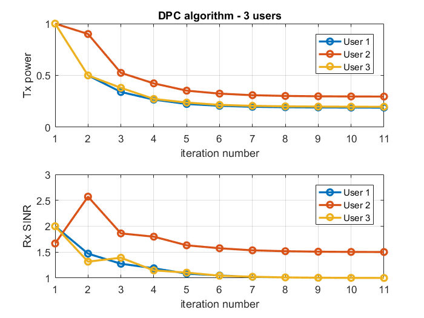
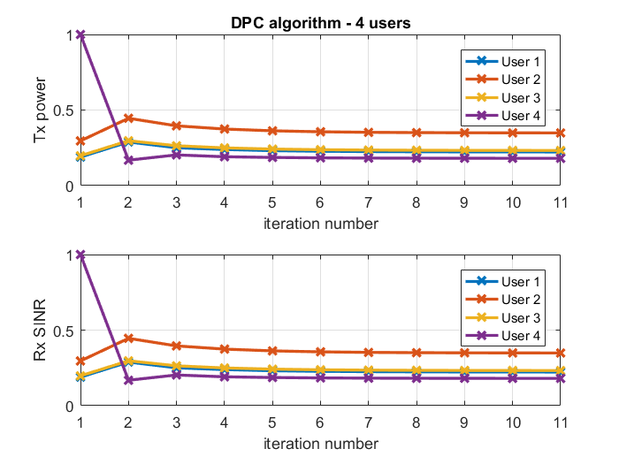
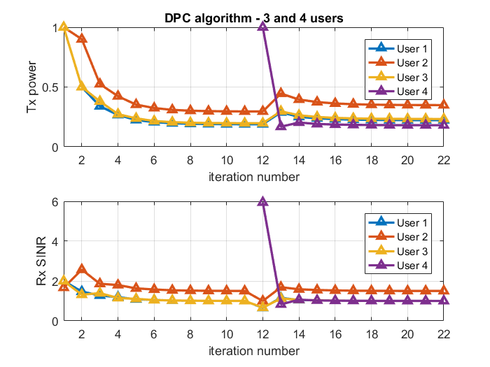

Contents
Chiang 1.1
function [] = dpc()
targetDir = 'C:\Users\Anuj Nayak\Desktop\SigProc4CommNet'; % assignment question numUsers = 3; % number of users gamma = [1;1.5;1]; % SINR requirement gainMtx = [1.0 0.1 0.3; ... 0.2 1.0 0.3; ... 0.2 0.2 1.0]; % channel gain matrix - assignment question pInit = ones(numUsers,1); % initial PTx numIters = 10; % number of iterations rho = 1; % inverse of processing gain noisePwr = 0.1*ones(numUsers, 1);
invoke dpc algorithm for 3 users
[p, sinr, pArr, sinrArr] = dpc_func(gainMtx, pInit, rho, noisePwr, gamma, numIters); figure(1);subplot(211);plot([1:size(pArr, 2)], pArr.', '-o', 'linewidth', 2);xlabel('iteration number');ylabel('Tx power');title('DPC algorithm - 3 users');grid on; legend('User 1','User 2','User 3');xlim([1 11]); subplot(212);plot([1:size(sinrArr, 2)], sinrArr.', '-o', 'linewidth', 2);xlabel('iteration number');ylabel('Rx SINR');grid on; legend('User 1','User 2','User 3');xlim([1 11]);drawnow(); print([targetDir '\dpc_3_user_scenario'], '-dpng') pArrFirst3Users = pArr; sinrArrFirst3Users = sinrArr;
add one more user - update the parameters accordingly
numUsers = 4; % number of users gamma = [1;1.5;1;1]; % SINR requirement gainMtx = [1.0 0.1 0.3 0.1; ... 0.2 1.0 0.3 0.1; ... 0.2 0.2 1.0 0.1; ... 0.1 0.1 0.1 1]; % channel gain matrix - assignment question pInit = [p;1]; % initial PTx in milliWatts numIters = 10; % number of iterations noisePwr = 0.1*ones(numUsers, 1); % invoke dpc algorithm for 4 users [p, sinr, pArr, sinrArr] = dpc_func(gainMtx, pInit, rho, noisePwr, gamma, numIters); figure(2); subplot(211); plot([1:size(pArr, 2)], pArr.', '-x', 'linewidth', 2); xlabel('iteration number');ylabel('Tx power');title('DPC algorithm - 4 users');grid on; legend('User 1','User 2','User 3','User 4');xlim([1 11]); subplot(212); plot([1:size(pArr, 2)], pArr.', '-x', 'linewidth', 2); xlabel('iteration number'); ylabel('Rx SINR'); grid on; legend('User 1','User 2','User 3','User 4');xlim([1 11]);drawnow(); print([targetDir '\dpc_4_user_scenario'], '-dpng')
plot
clubbing 3 and 4 users' scenario together
pArrAllUsers = [[pArrFirst3Users;inf(1, size(pArrFirst3Users, 2))] pArr]; sinrArrAllUsers = [[sinrArrFirst3Users;inf(1, size(sinrArrFirst3Users, 2))] sinrArr]; figure(3); title('DPC algorithm - 20 iterations (3 and 4 users)'); subplot(211); plot(pArrAllUsers.', '-^', 'linewidth', 2); xlabel('iteration number'); ylabel('Tx power');title('DPC algorithm - 3 and 4 users');grid on; legend('User 1','User 2','User 3','User 4');xlim([1 22]); subplot(212); plot(sinrArrAllUsers.', '-^', 'linewidth', 2); xlabel('iteration number'); ylabel('Rx SINR'); grid on; legend('User 1','User 2','User 3','User 4');xlim([1 22]);drawnow(); print([targetDir '\dpc_3_and_4_user_scenario'], '-dpng')
DPC ALGORITHM CORE
function [p, sinr, pArr, sinrArr] = dpc_func(gainMtx, pInit, rho, noisePwr, gamma, numIters)
pInvMethodEnable = 0; p = pInit; sinr = (diag(diag(gainMtx))*p)./((gainMtx-diag(diag(gainMtx)))*p*rho + noisePwr); sinrArr = sinr; pArr = p; % loop for numIters iterations for iterLoop = 1:numIters p = gamma./sinr.*p; sinr = (diag(diag(gainMtx))*p)./((gainMtx-diag(diag(gainMtx)))*p*rho + noisePwr); sinrArr = [sinrArr sinr]; pArr = [pArr p]; end % verifying the code with Matrix inversion method DMtx = diag(gamma); FMtx = [gainMtx - diag(diag(gainMtx))].*((ones(size(gainMtx, 1), 1)./diag(gainMtx))*ones(1,size(gainMtx, 2))); uMtx = gamma.*noisePwr./diag(gainMtx); if pInvMethodEnable == 1 pInvMethod = inv(eye(size(gainMtx, 1)) - DMtx*FMtx)*uMtx; end
For debug - BEGIN
% %% example question for debug - overriding the assignment question % numUsers = 4; % number of users % gamma = [2;2.5;1.5;2]; % SINR requirement % gainMtx = [1 0.1 0.2 0.3; ... % 0.2 1 0.1 0.1; ... % 0.2 0.1 1 0.1; ... % 0.1 0.1 0.1 1]; % channel gain matrix - assignment question % pInit = ones(numUsers,1); % initial PTx % % numIters = 20; % number of iterations % rho = 1; % inverse of processing gain % noisePwr = 0.1*ones(numUsers, 1); % For debug - END